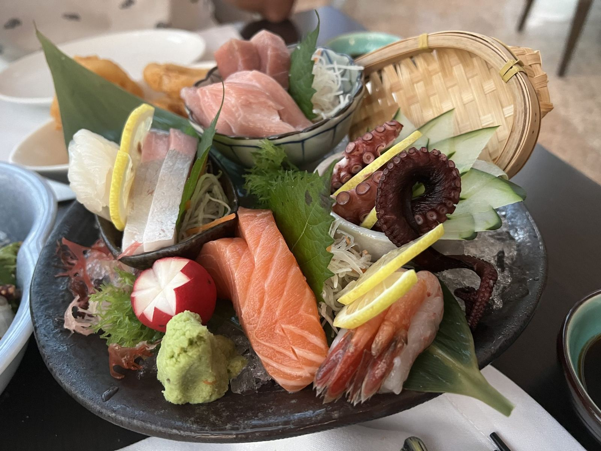
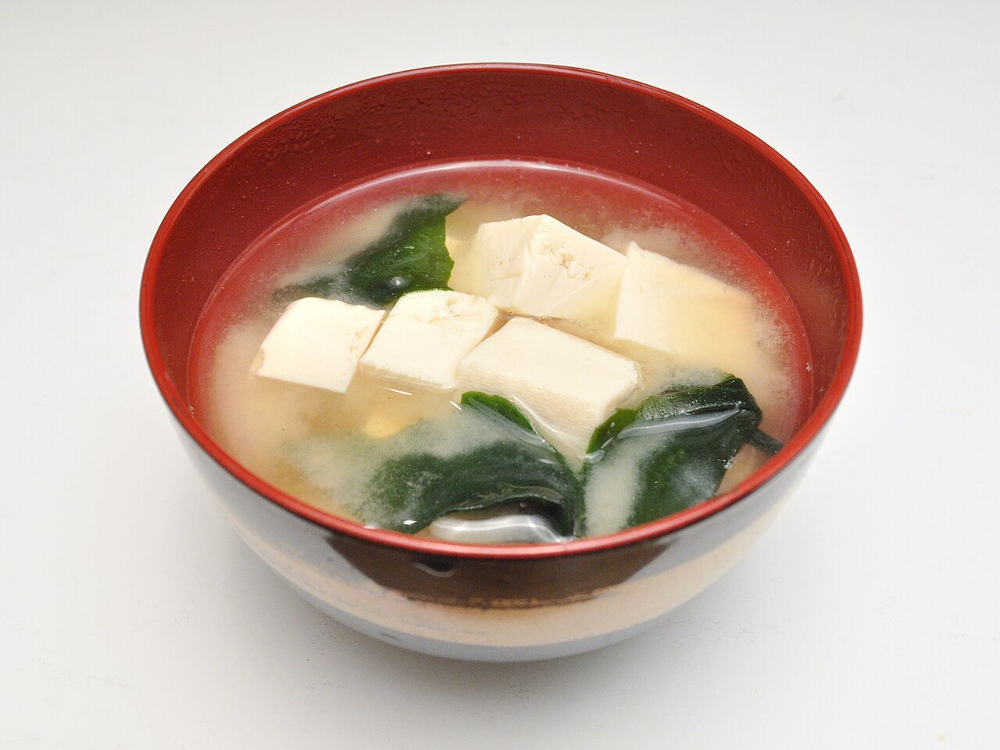

01 DASHI
毎朝、出汁をひく。
昆布と鰹節で、その日の朝に出汁をとります。お味噌汁も煮物も、この出汁が味のもとです。(見本の文章です)
02 FISH
魚は、その日のものを。

仕入れた魚は、刺身、焼き物、煮物と、いちばんおいしい形で。炭火で焼く魚は、皮まで香ばしく。
03 SEASON
旬を、小鉢で。

季節の野菜を使った小鉢は、毎日替わります。何度来ても、違う味に出会えるように。
写真・店舗名・内容はすべて見本用の架空のものです
Washoku Kasumi
毎日の定食から、ご宴席のお膳まで。
ご挨拶
カウンター8席と小上がり2卓の、小さな和食店です。魚は毎朝仕入れ、野菜は季節のものを中心にお出ししています。
出汁はその日の朝にとり、味つけは控えめに。お昼の定食から、夜の一杯とお造りまで、気軽にお立ち寄りください。
おすすめ
その日に届いた魚を、目の前で。
¥1,800
主菜に小鉢・ご飯・お味噌汁つき。
¥1,100炭火でふっくら、香ばしく。
¥1,300GALLERY




01 DASHI
昆布と鰹節で、その日の朝に出汁をとります。お味噌汁も煮物も、この出汁が味のもとです。(見本の文章です)
02 FISH
仕入れた魚は、刺身、焼き物、煮物と、いちばんおいしい形で。炭火で焼く魚は、皮まで香ばしく。
03 SEASON
季節の野菜を使った小鉢は、毎日替わります。何度来ても、違う味に出会えるように。
VOICE
「お刺身が新鮮で、定食のボリュームも満足でした。」
40代・男性(イメージ例)「お味噌汁の出汁がやさしくて、ほっとしました。」
30代・女性(イメージ例)「小鉢が毎回違って、通うのが楽しみです。」
50代・女性(イメージ例)ACCESS
お問い合わせ
000-0000-0000